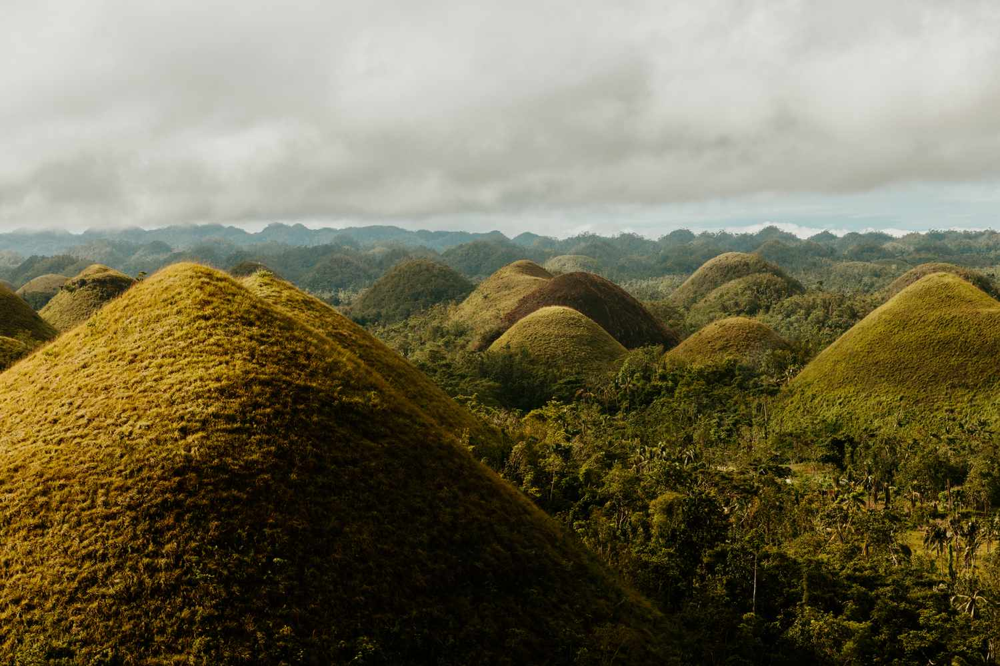

Park Profile • Bohol
Chocolate Hills Natural Monument
Hundreds of rounded hills create a unique landscape, especially during the dry season. Use designated viewing areas and avoid damaging vegetation.
Chocolate Hills Natural Monument on Bohol Island in the Philippines is a distinctive limestone karst landscape of more than a thousand uniformly shaped, grass-covered conical hills spread across roughly 50 square kilometers. Declared a national geological monument in 1988 and listed on the Philippines' UNESCO tentative list, the domes are notable for their near-uniform form and for turning chocolate-brown in the dry season. Visitors most often take in the panorama from the Chocolate Hills Complex in Carmen or from Sagbayan Peak, where short walks and viewing platforms offer wide vistas.
The unique karst landscape is composed of smooth, uniformly shaped conical isolated hills that cover a vast area (14,435 ha) in the central portion of the island. The site was once a platform of thick widespread buildup of coral reefs that thrived during the Pliocene, approximately 2-5 million years ago and later to form a sedimentary formation. Soon, this limestone formation was raised above the sea level and fractured. Rainwater, streams and groundwater dissolved the limestone, gradually forming the present landscape of cone karsts.
Helpful reminders
- Check official park announcements and local weather before visiting.
- Follow posted rules and instructions from park staff or guides.
- Respect nature and local communities; take all trash with you.